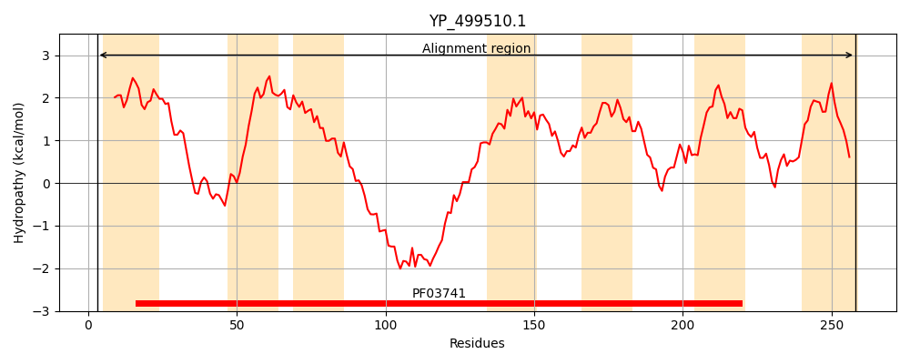
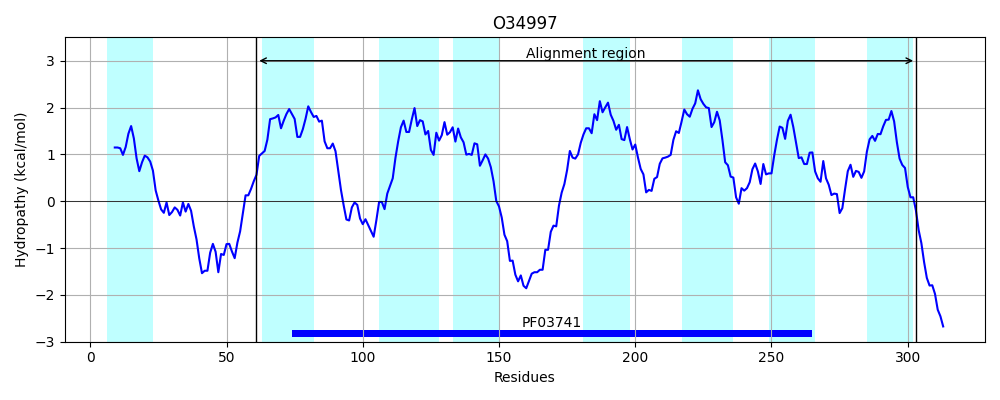
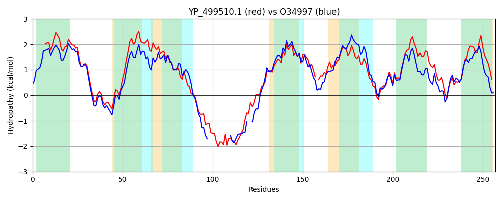

Hit Accession: O34997
Hit TCID: 2.A.109.1.4
Hit Description: gnl|BL_ORD_ID|7169 gnl|TC-DB|O34997|2.A.109.1.4 Uncharacterized membrane protein ykoY OS=Bacillus subtilis GN=ykoY PE=3 SV=1
Mach Len: 257
e:0.000000
Query TMS Count : 7
Hit TMS Count: 8
TMS-Overlap Score: 4.050000
Predicted Substrates:None
BLAST Alignment:
Score: 692 , Bit scores: 271 bits, E-value: 9.8e-91, Alignment length: 257, Percentage identity: 55
Query: 3 MDPSLILPYLWVLVVLVFLEGLLAADNAIVMAVMVKHLPPEQRKKALFYGLLGAFVFRFLALFLISIIANFWFIQAAGAVYLIYMSIKNLWQFFKHPEIESPEAGDDHHYDESGEEIKASNKSFWGTVLKIEFADIAFAIDSMLAALAIAVTLPKVGI-HFGGMDLGQFVVMFLGGMIGVILMRYAATWFVELLNKYPGLEGAAFAIVGWVGVKLVVMVLAHPDIAVLPEHFPHGVLWQSIFWTVLIGLVIIGWLGS 258
MD +L+L Y WVL+VL+ LEG+LAADNA+VMAVMVKHLP E+RKKALFYGL GAFV RF +LF IS + N W +QA GA+YL+Y+S +L + + + +++ +E K S FW TVLK+E ADIAFA+DS+LAA+A+AVTLP + GG+D GQF+V+ GG+IG+++MR+AA+ FV+LL + P LE AAF IVGWVGVKL + LAH DIAV+ EHF H W+ IFW VL + + GW S
Sbjct: 61 MDAALLLEYGWVLLVLIGLEGILAADNALVMAVMVKHLPEEKRKKALFYGLAGAFVLRFGSLFAISFLVNVWQVQAIGAIYLLYISASHLLKRYVFKK------------EDTHKETKQS--GFWPTVLKVELADIAFAVDSILAAVALAVTLPGTSLPKIGGLDGGQFLVILAGGIIGLVIMRFAASMFVKLLKERPSLETAAFVIVGWVGVKLALYTLAHRDIAVVSEHFIHSGTWKLIFWGVLAAIAVCGWFMS 303 | Protein Hydropathy Plots: |
|---|
|  |  |
Pairwise Alignment-Hydropathy Plot:
|
|---|
|  |